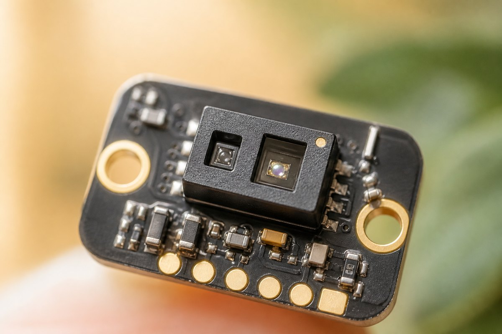
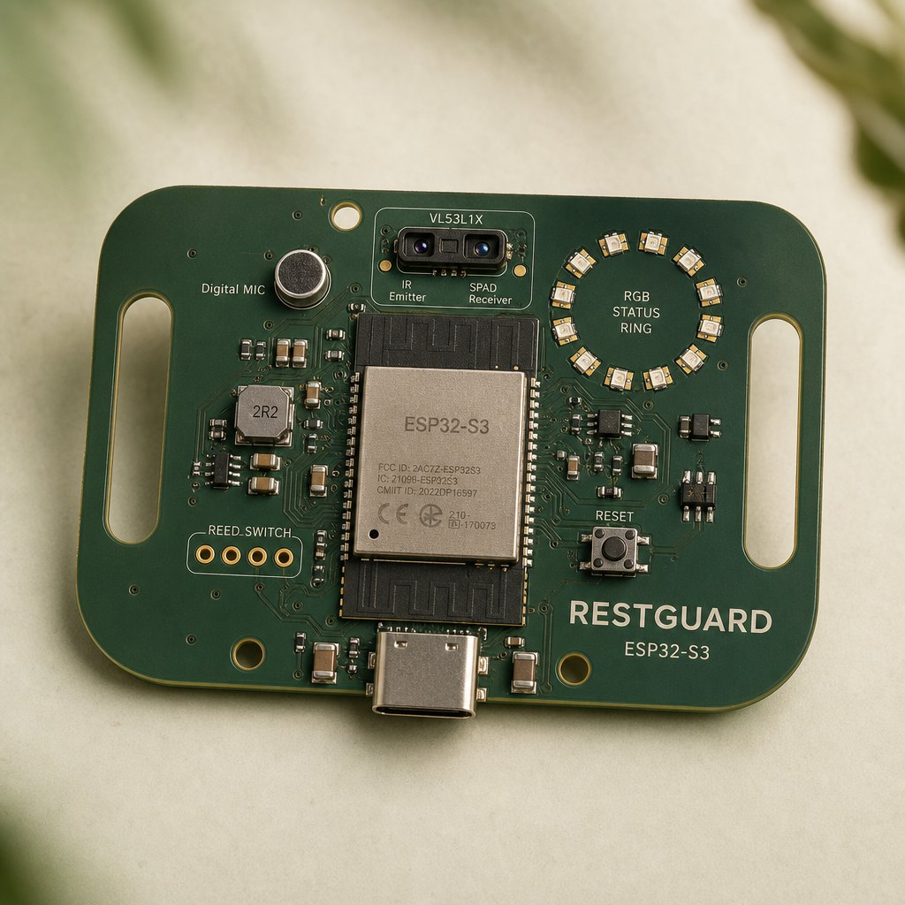

Local brain
Wi-Fi and Bluetooth for a staff page on the LAN. Enough headroom for filtering, a 30-minute window, and hysteresis. Production still needs power and security review.
Hardware hero · prototype board
A compact ESP32-S3 board in the spirit of a wearable tracker—strap slots, ToF window, USB-C—shot on the same warm cream as the portfolio, because this product is for pets, not a dark lab.

Concept visualization of the proposed electronics. Not a manufactured production unit.
Wi-Fi and Bluetooth for a staff page on the LAN. Enough headroom for filtering, a 30-minute window, and hysteresis. Production still needs power and security review.
Time-of-flight up to a few metres in the datasheet; RestGuard limits itself to the visitor zone and ignores brief pass-bys.
A digital microphone contributes minutes-above-threshold only. The RGB ring answers in under two seconds, always with e-paper text.

Why this board is not a collar
The slots echo a wearable tracker so a strap or plate can hug a kennel frame. The animal never wears the electronics. USB-C power avoids a sealed battery in the first concept. A two-piece shell with captive screws keeps the board replaceable.
See the score the chip would computePrototype bill of materials
Concept estimate in CAD; excludes labour. Bench prototype first, custom PCB only after placement is measured.
